Chromium local em 1440 e 390 px, com movimento reduzido. O Atlas v3.11.1 mostra o provedor Google; o ambiente local está com o provedor desativado. A implementação segue AuthForm, PasswordInput, SocialLogin e account-motion.css do Next.js.
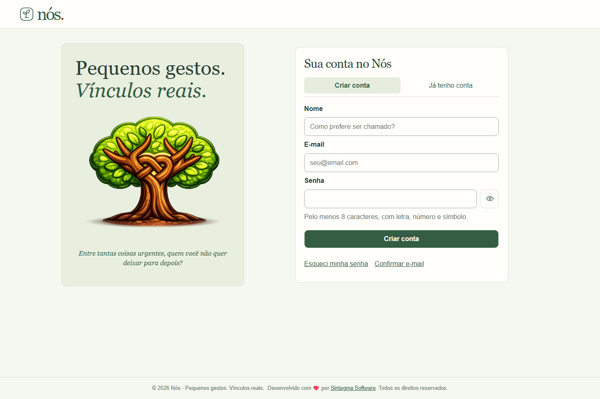
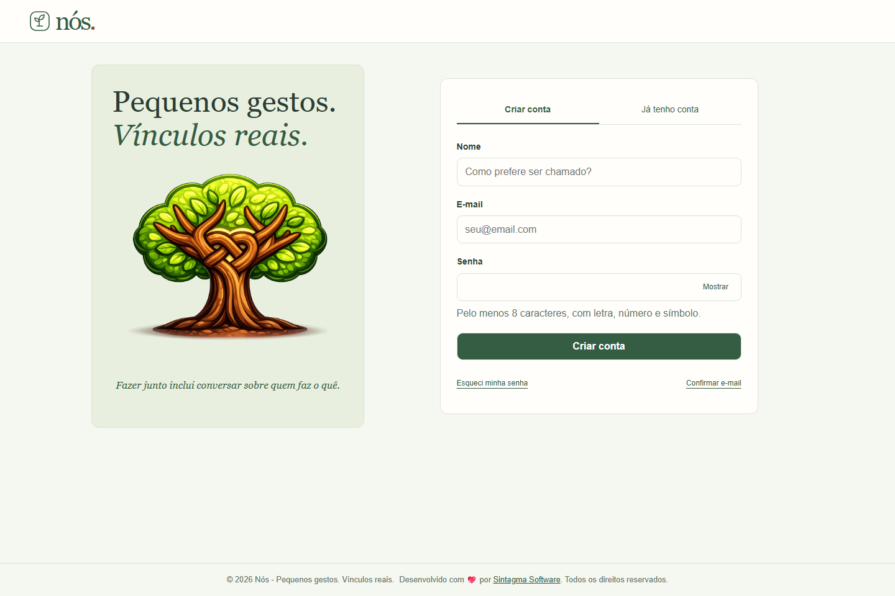
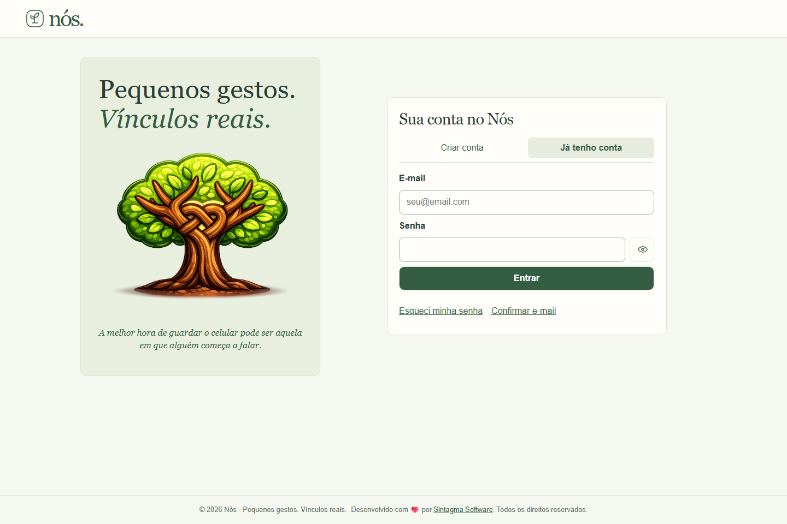
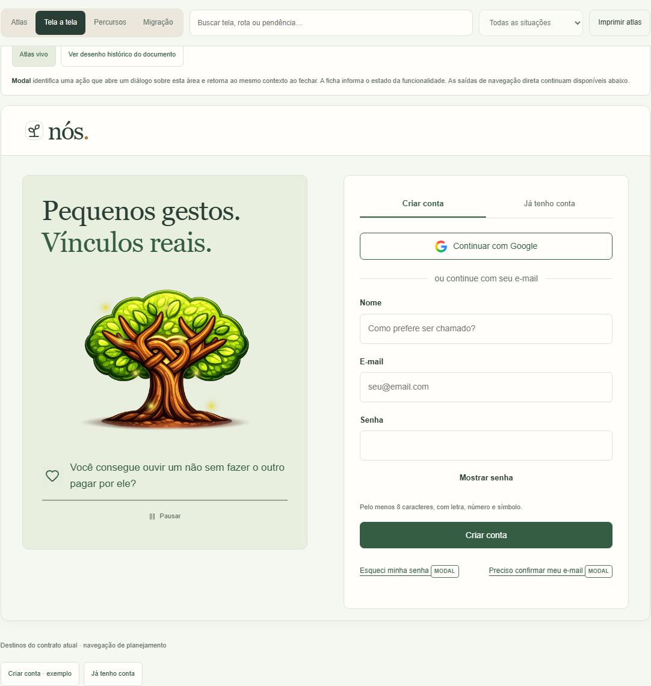
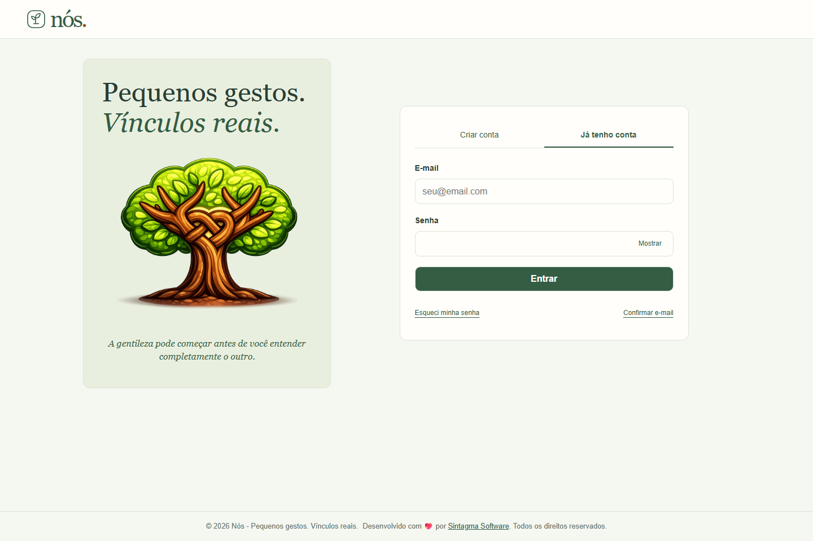
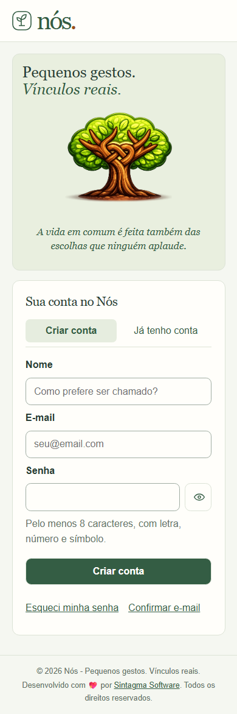
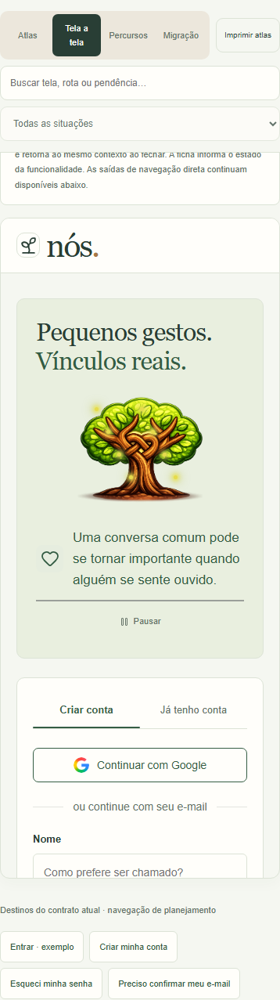
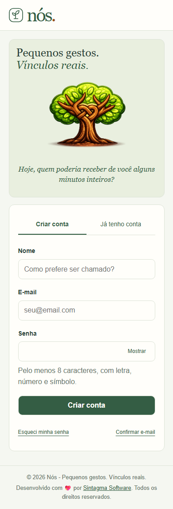
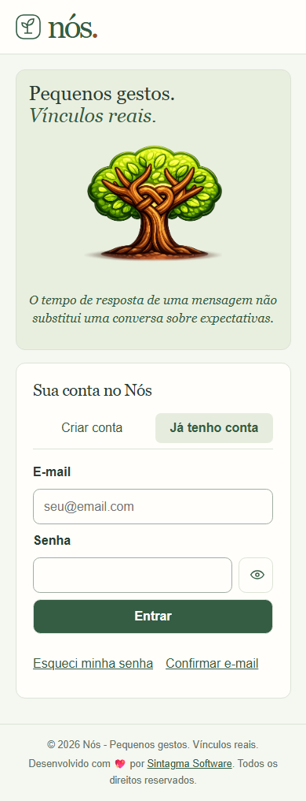
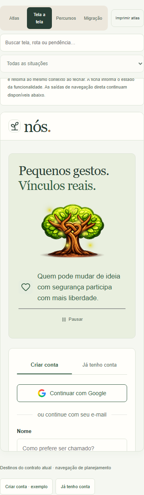
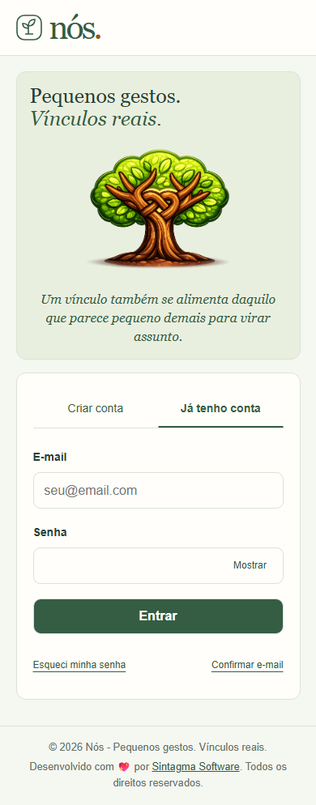